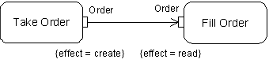
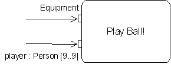

UML 2 Activity and Action Models
Part 4: Object Nodes
Conrad Bock, U.S. National Institute of Standards
and Technology
|
|
COLUMN
PDF Version |
This is the fourth in a series introducing the activity
model in the Unified Modeling Language, version 2 (UML 2), and how
it integrates with the action model [1]. The first article gives
an overview of activities and actions [2], while the second two cover
actions generally and control nodes [3][4]. The remainder of the
series elaborates other specific elements. This article covers object
nodes, which hold data and objects temporarily as they wait to move
through an activity.
1 OBJECT NODES
To recap, UML 2 activities contain nodes connected
by edges to form a complete flow graph. Control and data values flow
along the edges
and are operated on by the nodes, routed to other nodes, or stored
temporarily. More specifically, action nodes operate on control and
data they receive via edges of the graph, and provide control and data
to other actions; control nodes route control and data through the
graph; and object nodes hold data temporarily as it waits to move through
the graph. Data and object are unified in UML under the notion of classifier,
so the terms are used interchangeably. The term "token" is
shorthand for control and data values that flow through an activity.
There
are four kinds of object node, as shown in Figure 1 and described
in the sections below. The functionality of object nodes is introduced
in stages:
- Holding a single token (section 2).
- Holding multiple tokens,
buffering, and backup (section 3).
- Competing for tokens, traverse-to-completion
semantics, deadlock prevention, and central buffers (section 4).
- Data store nodes and a short history and future of data flow
(section 5).
Figure 1: Object Nodes 2 PARAMETER NODES AND PINS
Previous articles introduced two kinds
of object node: activity parameter nodes and pins. An example of
parameter nodes is shown in the partial
activity of Figure 2. It has two output parameter nodes on the
right, each with a separate flow going into it. Whichever output
value reaches
a parameter node first is held there until the other arrives.
When both parameter nodes have a value, the activity is complete and
returns those values to the invoker of the activity1.
The input parameter
nodes on the left get their values all at once, when the activity
is started.
They may or may not be held there for some period, depending
on
whether they can flow downstream, as explained later in this
article.
Parameter nodes must correspond to parameters of the containing
activity. Activities are a kind of behavior in UML 2, and like
all behaviors,
they have parameters that specify the types of values that
are input to the activity and output from the activity. Parameters
on behaviors
apply to all three kinds of behavior in UML, activities, state
machines, and interactions, so are modeled separately from
activity parameter
nodes. See Figure 8 of the first article for a repository model
showing the relation of behavior parameters and activity parameter
nodes
[2].
Figure 2: Activity Parameter Nodes
All object nodes, including parameter nodes and pins, specify
the type of value they can hold. In Figure 2, the parameter
nodes hold
values of type Company and Share.
If no type is specified, they can hold values of any type. Object nodes
can also specify the state that
their objects must be in, as provided by a state machine for the type
of object being held. For example, in Figure 2 the objects held in
the Merged Company parameter node must
be in the New state and the
objects in the New Shares parameter
node must be in the Unsold state.
Objects must be in the required state before being put in the object
node2. Multiple tokens in an object node can have the same value at
the same time, for example, there can be multiple tokens for the number
3 or for the same instance of a class.
An example of input pins is shown
in Figure 3, in two of the notational forms3, 4. Whichever input value
reaches a pin first is held there until
the other arrives. When both pins have a value, the values are passed
into the action and it starts. If the action invokes the Acquisition activity
in Figure 3, the input values move from the pins to the parameter
nodes of the activity at the time of invocation. See section 4 of
the
second article for more about behavior invocation [3], and Figure
8 in particular, which shows the relation of pins to parameters.
Figure 3: Input Pins
A special kind of input pin called a value pin is defined for
providing constant values such as numbers, or values calculated
by vendor or
user-dependent expressions. It uses value specifications to model the
value, described in the third article in connection with decision node
guards [4]. It is notated like a normal input pin with a value specification
written beside it. Unfortunately, value pins cannot be used to provide
output values to activity parameter nodes. This will be addressed in
finalization of UML 2.
Pins can be notated with the effect that their
actions have on objects that move through the pin. Effect is
one of the four values create,
read, update,
or delete. The example in Figure
4 indicates that Take ORder creates
an instance of Order and Fill
ORder reads
it5. The create effect
is only possible on outputs, and the delete effect
is only possible on inputs. If a single rectangle pin notation is
used, then pin annotations such as effect still appear next to the
action where
the pin would have been shown.

Figure 4: Effect 3 MULTIPLE TOKENS
Object nodes can hold more than one value
at a time, and some of these values can be the same. Each object
node specifies
the maximum number
of tokens it can hold, including any duplicate values, which
is called the upper bound. At runtime, when the number of values
in an object
node reaches its upper bound, it cannot accept any more. Figure
5 shows an example using the buffering capabilities of pins
between
three manufacturing
actions operating on parts. If painting is delayed too much for
some reason, the input pin will reach its upper bound, and
parts from
polishing will not be able to move downstream. If painting
is delayed further,
the output pin of polishing will fill up and the polishing behavior
will not be able to transfer out polished parts. Unless the polishing
behavior has an object node internal to it that buffers output
parts, it will not be able to take parts from its input pin,
which will
likewise fill up and propagate the backup. Only when the
input
pin to PAINT
goes below its upper bound will parts be able to flow again.
Figure 5: Upper Bound
Buffering capabilities are intentionally assigned to object
nodes in activities, rather than to parameters of behaviors.
The parameters
of a behavior or operation, also known as the signature, only declare
the kinds of things needed for input and output, and how many of each.
Buffering capabilities are assigned either to pins on actions that
invoke behaviors, or to the implementations of a behavior, such as
parameter nodes in activities. The UML 2 metamodel separates pins and
activity parameter nodes from parameters of behavior. See example repository
model in Figure 8 of the first article of the series [2].
Some applications
have the advantage of executing the same behavior concurrently
to reduce backup restrictions. For example, a factory
executing the process in Figure 5 might have more than one station
to use for the PAINT step. This means that more than one part arriving
at the input pin of Paint can start
an invocation of Paint at the same
time, or at staggered times. Likewise, the concurrent executions of
Paint can put more than one part on
the output pin at the same time, or at staggered times, and not necessarily
in the same order in which
they were taken from the input pin. UML 2 calls this a reentrant behavior6, 7, 8
. It is indicated with the keyword «reentrant» on the
action, or with a property list {reentrant}.
Software applications can
especially make use of reentrancy, for example, when processing packets
from a telephone switch to provide information
for a billing system. Multiple threads can be set up for each step
in the processing so packets taking a short time to handle
do not need to wait for those taking longer. Upper bounds can
be set very high to temporarily buffer packets or intermediate results
if the billing system goes down.
Object nodes holding multiple values
can specify the order in which values move downstream. The
default is first-in, first-out (FIFO,
a pipe), but users can change this to last-in, first-out (LIFO,
a queue),
or specify their own behavior to select which value is passed out
first. For example, Figure 6 shows orders being filled using a
priority ranking.
The user-specified selection behavior is passed all the values
in the object node and returns one to move downstream9, 10, 11.
Selection
behaviors
can also be used on object flow edges coming out of object nodes.
This is useful in situations where the selection criteria varies
with
the path
taken out of the object node, see sections 4 and 5.
Figure 6: Selection
Behavior A partial repository model for Figure 6 is shown in Figure
7. The selection behavior accepts multiple orders from the
object node and
returns one that should be offered next to an outgoing edge. Parameter
multiplicities are described next and shown in Figure 7 as the lowerValue
and upperValue of
parameters.
Figure 7: Repository for Figure 6
Behavior and operation parameters can have multiplicities that specify
the minimum and maximum number of values each parameter accepts or
provides at each invocation of the behavior. Minimum multiplicity on
an input parameter means a behavior or operation cannot be invoked
by an action until the number of values available at each of its input
pins reaches the minimum for the corresponding parameter, which might
be zero (see the second article on actions that invoke behaviors [3])12.
For example, Figure 8 shows an action invoking a behavior for playing
baseball, which might be delayed waiting for all nine the players to
arrive. The pin label reflects the information in the PLAYER parameter
of the Play Ball! behavior, including
its type and multiplicity. On the other hand, if play is delayed waiting
for
the equipment, and meanwhile
more than nine people collect at the input pin, then only the maximum
number, nine, are taken to start the action13, 14, 15, 16.

Figure 8: Parameter Multiplicity
Similar to minimum multiplicity on parameters is weight on object
flow edges, which specifies the minimum number of values that can traverse
an object flow edge at one time. For example, in Figure 9 the Make
Part action
must output 100 parts before they can move to the input of Ship
Part. Ship Part can take from 1 to 1000 parts, because it is
a general purpose behavior, but in this particular usage of it, parts
are shipped in batches of 100. If for some reason shipping is delayed,
multiples of 100 parts will collect at the input of Ship
Part, whereupon
more than 100 parts will be shipped at the next invocation, unless
there is an upper bound on the input pin. A weight of "all" means
that all values in the source object node are moved at once. The default
weight is 1.
Figure 9: Object Flow Weight
4 TOKEN COMPETITION
A parameter node or pin may have multiple edges
coming out of it, whereupon there will be competition for its tokens,
because object
nodes cannot
duplicate tokens like forks can [4]. Modelers should use this pattern
only if they want indeterminacy in the movement of data in the
graph. For example, Figure 10 shows parts being made, then painted
at one
of two stations, but not both.
Figure 10: Token Competition
Figure 10 is also an example of how edges cannot hold tokens,
as object nodes and actions can. If the input pin of Paint
at Station 1 is
full, the object flow edge going into it cannot claim a value
from the output
of Make Part and hold it until Paint
at Station 1 is able to take it.
The token remains at the output of Make Part until
the traversal can be completed to one of the input pins. The terminology
of the
UML 2 specification is that the output pin "offers" the token
to the outgoing edges, which in turn offer it to their respective targets.
The traversal of the edge cannot take effect until all the elements
between source and destination object node accept the offer, including
the destination. This article calls the principle traverse-to-completion.
Control
nodes cannot hold tokens, either. For example, Figure 11 shows a
decision node routing some parts for testing and others for painting
(see the previous article on decision nodes and guards [4]). If a
part
output from Make Part fails the testing
guard and the input pin at
Paint is full, then the part cannot
reside at the decision node waiting to be painted. It remains at
the output
pin and will be routed either
to testing when that guard succeeds or to painting when the input
pin of Paint is no longer full.
If multiple edges were coming out
of the output pin of Make Part, then
the part would be subject to competition, and may not ever be painted
or tested at all17.
Figure 11: Decision Node
Preventing control nodes and edges from holding tokens ensures
that values do not get "stuck" when alternative paths
are open. In any particular direction of flow it may take a long
time to select
tokens, decide how to route them, for backups to clear, and so on.
Traverse-to-completion means that tokens move along the path of least
resistance by going to the first available object node. Data and object
values are always residing in object nodes or being operated on by
actions, moving instantly between them when all the criteria along
the path between source and destination are satisfied. The decision
of where to route tokens may take time, but no tokens move until the
decision process is complete. For this reason, behaviors associated
with traversal, such as decision input and selection should not have
side-effects or be overly complicated, because they might be executed
many times before a value succeeds in being moved18, 19.
Another behavior
that falls under traverse-to-completion is the transformation
of tokens as they move across an object flow edge. Figure 12 shows
customers being retrieved from orders. Each order is passed to the
transformation behavior and replaced with the result. The result
is
offered to the input pin of Send Notice and
must be accepted there before the order can be removed from the output
pin of Close Order.
The repository stores a complete behavior, but the notation can just
show the contents or an abbreviation of the behavior, as in Figure
12.
Figure 12: Object Flow Transformation
Central buffers are for situations where tokens under competition
arrive from multiple sources. For example, Figure 13 shows parts arriving
at a central buffer from two factories, which are then painted at two
other factories. Pins can be omitted from the notation, but they are
still recorded in the repository. Pins cannot be used as central buffers,
because pins have flows coming or going out, but not both.
Figure 13: Central Buffer Another aspect
of traverse-to-completion is that an input pin of an action
cannot accept tokens until all the input pins
of the action can accept them. This is to prevent deadlock, where the
input pins of two actions each have some of the tokens required for
the other to start. For example, Figure 14 shows two drilling behaviors
requiring a drill and an extension cord to start, as might happen when
two carpenters are working together (pins for material
being drilled are omitted). One action's input pin cannot accept the
drill when the other input pin on that action cannot get the extension
cord at the same time. This prevents one action from holding the drill
while the other takes the extension cord, and neither can start. The
example is adapted from the well-known dining philosopher's problem
in models of concurrency [5]. Input pins can still buffer up multiple
tokens, but they can only accept tokens in unison with the other input
pins on the same action20.
Figure 14: Avoiding Deadlock 5 DATA STORE NODES
Earlier forms of data flow and storage have the
following characteristics [6][7]:
- Passive: the presence of data in the store does not initiate
actions. Actions take data as needed.
- Non-depleting: the use of data in the store does not remove
it from the store.
- Persistent: data in the store remains there after the activity
containing it terminates.
This might be informally called the "pull" form
of data flow and storage. Later forms of data flow and storage, including
UML 2
object nodes, have exactly the opposite characteristics, which might
be called "push":
- Active: the presence of values in an object node initiates
downstream actions by sending inputs to them.
- Depleting: values in an object node used by an outgoing
edge are not available to other outgoing edges. This is token competition.
- Transient: values do not remain in object nodes after the
activity containing the object node terminates21.
UML 2 data store nodes are an
attempt to support the earlier form of data flow and storage by
providing a non-depleting specialization
of object node. Tokens flowing out of data store nodes are copies
of tokens that remain in the data store node, so the values seem as
if
they are being read from the store. Tokens in a data store node cannot
be removed, though values do not remain in the store after the containing
activity is terminated, and a token arriving at a store that already
has another token for the same object replaces that token.
Selection
and transformation behaviors can be applied on edges coming out of
data store nodes to retrieve information from the store, as
if a query were being performed. For example, a selection behavior
can identify an object to retrieve and the transformation behavior
can get the value of an attribute on that object. Figure 15 shows
a personnel data store being populated by a Hire
Employee behavior,
and
read by other behaviors. Employees not assigned to projects are
selected for input to the Assign Employee behavior.
Once a year, all employees
are reviewed, using the AcceptEventAction as
a timer, described later in the series. This pattern uses traverse-to-completion
to ensure
that the employee list is read only once a year, since the stored
objects
are only retrieved when the join succeeds.
Figure 15: Data Store Node
UML data store nodes are still active and transient, however,
and do not completely capture pull semantics22.
Since the earlier and later
forms of data flow and storage are so different, the most accurate
way to model the earlier forms in the later is to use actions instead
of flows. The functionality of earlier data storage can be achieved
with UML 2 actions for modifying persistent objects, such as AddStructureFeatureValueAction,
described later in the series. A data flow going into an earlier form
of data store is equivalent to assigning that data as a value of an
attribute of a persistent object. Conversely, a data flow coming out
from a traditional data store is equivalent to retrieving a value from
an attribute in a persistent object using UML 2 actions for that. One
could imagine extending UML with a concise graphical or textual notation
for these patterns of using read and write actions on persistent objects23.
The transition from earlier to later forms of data flow and
storage indicates a trend of unifying control and data flow.
The characteristics
of later data flow are more like control (active, depleting, transient).
Conversely, recent work in UML for Systems Engineering treats control
as a form of data by providing additional control values for terminating
actions, as well as control queuing, and control operators [8][9].
The trend in unification of control and data functionality forms
a cycle, because new capabilities for one suggest new capabilities
for
the other. For example, if control has terminating values, why should
data be limited to being a form of enabling control? If data arrives
at an action that is already executing, it might mean the old
data is incorrect, and the action should be terminated, and start
over. Further unification of control and data is an area for
future work.
6 CONCLUSION
This is the fourth in a series on the UML 2 activity
and action models. It focuses on object nodes, which hold data
and objects
as they wait to
move through a flow graph. The four kinds of object node are covered:
parameter nodes, pins, central buffers, and data stores. Functionality
is addressed in stages, starting with single and multiple token
flow, then token competition, traverse-to-completion semantics,
and deadlock
prevention. The article ends with a short history and future of
data flow models.
ACKNOWLEDGEMENTS
Thanks to Evan Wallace and James Odell for their
input to this article.
Footnotes
1 The activity must also
wait for all control and data to stop flowing in other parts
of the graph before terminating.
2 In this sense, the state requirement is an extension of the
object node’s type, which arguably should be promoted to
types in general. Then they can be used by parameters, attributes,
and other typed elements in UML. The same applies to constraints
applied locally to a general type. This will be considered in
finalization.
3 All pin notations are stored in the repository the
same way, which is analogous to the pin notation. See Figure
6 of the first article [2].
4 A fourth notational form is defined
for object nodes that have signals as their type. See Figure
275, page 350 of the UML
2 specification [1]. It will be discussed
later in the series.
5 The UML 2 specification inadvertently assigns effect to object
flows, rather than to the parameters of behaviors. This will
be addressed in finalization.
6 The term "reentrant" in
computer science means a procedure that can have multiple executions
occurring at the same time without interfering with each other.
This applies to UML 2 reentrant behaviors, but the term is extended
to have the particular execution semantics for activities described
above.
7 UML 2 does not restrict the number of concurrent executions
of a reentrant behavior that can exist at one time. This will
be addressed in finalization or a profile.
8 Reentrant behaviors
cannot have streaming parameters [3], because it would be not
be possible to determine which execution of the behavior should
receive a
streaming value at runtime.
9 It currently is not specified what order values
in an object node are passed to selection behaviors. It would
be most useful to pass them in the order they
arrived at the object node, so the selection behavior can, for example, use
FIFO within order priority, or reverse it for LIFO. This will be addressed
in finalization.
10 This way of ordering values has the benefit of dynamically
responding to current conditions, because the selection behavior
can account for these
conditions
every time a value is chosen to move downstream. However, for applications
in which
the selection criteria are fixed, it is more efficient to insert new values
into the object node according to the ranking. Then selecting a value to
move downstream
is just a matter of taking the one at the top of the list, rather than
reevaluating the order each time. A selection behavior can be
implemented as an insertion-time
ordering, because the activity model only specifies the required runtime
effect. However, it is difficult for tool vendors to automatically translate
a selection
algorithm into a queue insertion algorithm. This will be addressed in finalization.
11 The
selection behavior could alternatively be on the input pin
of FILLORDER. The action will consume values in the order of
selection.
12 An action invoking a behavior with one input parameter of zero
minimum multiplicity could in theory begin executing spontaneously
and repeatedly because it has all the data inputs it requires.
However, the only reasonable interpretation here is that the
action needs either a data input or a control input to start.
This will be clarified in finalization.
13 UML does not define a default parameter multiplicity to apply
to the EQUIPMENT input above, but modelers would probably expect
it to be exactly one. This will be addressed in finalization.
14 Parameters
with maximum multiplicity greater than one can be marked as ordered.
This means that each invocation of a behavior using the parameter can input or
output multiple, ordered, runtime values. For pins corresponding to those parameters,
it is not currently specified that the values in an input pin will be passed
in the same order to the parameter on invocation, or from parameter to output
pin on termination. This is a reasonable expectation, however, and will be addressed
in finalization.
15 Parameters with maximum multiplicity greater than one can be
marked as allowing multiple occurrences of the same value. This
means that a single invocation of
a behavior using the parameter can input or output multiple runtime values where
some of the values are the same. Since object nodes with upper bound greater
than one always allow multiple tokens to have the same value, it is a good idea
to make this indication on parameters also, unless the modeler knows in advance
that it will never happen.
16 The interaction of multiplicity and streaming [3] is
not currently specified. One option is that the minimum and maximum
give restrictions on size of "batches" that
can stream in or out at one time.
17 Figure 11 would have the same effect if the decision node were
removed, and the edges with guards came directly from the output
pin of MAKE PART. The purpose of decision nodes is to ensure
values move along exactly one of its outgoing edges, which is
also the semantics of object nodes. The ELSE guard is currently
specified only for edges coming from decision nodes, but is equally
applicable to edges from object nodes. This will be addressed
in finalization.
18 Traverse-to-completion enables implementations to optimize
the execution of traversal behaviors. For example, if the destination
object node is full, a selection behavior at the source object
node need not be executed until the destination is ready to accept
values.
19 The division of activity nodes in this manner is similar
to the distinction between states and pseudo states in UML state
machines. A state machine cannot pull events
from its event buffer while it is transitioning between states, including while
in pseudostates. Informally speaking, a UML state machine can only "rest" in
real states, which is called the run-to-completion requirement. The purpose is
to handle each event completely before taking another event. This ensures every
state completes its actions without interruption from incoming events.
20 Input pins of invocation actions must take enough tokens to
meet the minimum multiplicity of the corresponding parameter.
21 Tokens are only references to objects, so the objects themselves
are not deleted, even if the activity is terminated, for example
with an activity final [4].
22 Implementation-dependent extensions can support selection behaviors
that succeed only when a downstream action has control passed
to it, partially capturing pull semantics. This still does not
model the fact that earlier forms of data store could be read
anytime during an action, not just at start-up of actions. In
UML this would require extensions to streaming [3].
23 A hybrid approach would be to extend data store nodes with
the capability of modifying persistent objects. For example,
a data store node could be assigned an object and attribute in
which to store values received by the node. The object could
be represented by a partition. Partitions will be discussed later
in the series. It is being considered in a submission to UML
for Systems Engineering [8].
REFERENCES
[1] Object Management Group, “UML 2.0 Superstructure
Specification,” http://www.omg.org/cgi-bin/doc?ptc/03-08-02,
August 2003.
[2] Bock, C., “UML 2 Activity and Action Models,” in
Journal of Object Technology, vol. 2, no. 4, July-August
2003, pp. 43-53, http://www.jot.fm/issues/issue_2003_07/column3.
[3] Bock, C., “UML 2 Activity and Action Models, Part
2: Actions,” in
Journal of Object Technology, vol. 2, no. 5, September-October 2003,
pp. 41-56, http://www.jot.fm/issues/issue_2003_09/column4.
[4] Bock, C., “UML 2 Activity and Action Models, Part 3: Control
Nodes,” in Journal of Object Technology, vol. 2, no. 6, November-December
2003, pp. 7-23, http://www.jot.fm/issues/issue_2003_11/column1.
[5] Filman, R., Friedman, D., Coordinated Computing: Tools and
Techniques for Distributed Computing, McGraw-Hill, 1984.
[6] Rumbaugh, J., et al., Object-oriented Modeling and Design, Prentice
Hall, 1991.
[7] Shlaer, S., Mellor S., Object-oriented Systems Analysis: Modeling
the World in Data, Yourdon Press, 1988.
[8] OMG Systems Engineering DSIG, “UML for Systems Engineering
RFP,” http://www.omg.org/cgi-bin/doc?ad/03-03-41, March 2003.
[9] Bock, C., “UML 2 Activity Model Support for Systems Engineering
Functional Flow Diagrams,” Journal of the International Council
on Systems Engineering, vol. 6, no. 4, October 2003.
About the author
|
 |
Conrad Bock is a
Computer Scientist at the National Institute of Standards and
Technology, specializing in process models. He is one of the authors
of UML 2 activities and actions, and can be reached at conrad.bock
at nist.gov.
|
Cite this column as follows: Conrad Bock: “UML 2 Activity
and Action Models Part 4: Object Nodes”, in Journal of Object
Technology,
vol. 3, no. 1, pp. 27-41. http://www.jot.fm/issues/issue_2004_01/column3
|